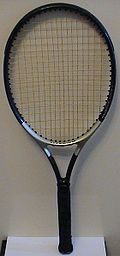

Le terrain et le matériels de tennis
Sur cette page vous trouverez les informations concernant le terrain de Tennis ainsi que le matériel nécessaire pour pratiquer ce sport.
Le terrain
• Le terrain de tennis est appelé le court, Le court de tennis correspond à l'aire de jeu. Ses dimensions sont très précises en raison des mesures anglaises d'origine, en yards. Il doit obligatoirement posséder des lignes peintes avec une peinture blanche, afin de faciliter leur lisibilité. Les courts de tennis se déclinent en plusieurs surfaces, qui sont abordées dans la suite de l'article. Chaque surface possède ses caractéristiques propres (rapidité, rebond) ce qui contribue à la diversité des jeux possibles.
Comme présenté sur l'image ci-contre, le court de tennis doit être de 23,77 mètres (soit 26 yards) de long pour 8,23 mètres (9 yards) de large. Cela représente donc 11,89 mètres (13 yards) de longueur de chaque côté du filet, et 8,23 mètres de largeur pour une rencontre de simple, où les couloirs latéraux ne sont pas comptabilisés. Pour le jeu en double, deux couloirs de 1,37 mètre sont ajoutés. La largeur du court de double est donc de 10,97 mètres (12 yards). Sur le terrain, on retrouve cinq sortes de lignes différentes :
Les lignes de fond à chaque extrémité, une marque indique le milieu de cette ligne ;
Les lignes de service parallèles au filet qui délimitent les zones de service placées à 6,40 mètres (7 yards) du filet ;
La médiatrice au filet qui divise chaque zone de service en deux carrés de service ;
Les lignes de côté en simple qui délimitent la zone de jeu pour une partie en simple ;
Les lignes de côté en double qui délimitent la zone de jeu pour une partie en double.
Il existe aussi des dimensions concernant la distance au fond du court et sur les côtés : des espaces de 5,50 mètres au fond et de 3,05 mètres sur les côtés (il s'agit des distances minimales imposées par la Fédération française de tennis dans les clubs).
Le filet
Sa hauteur est fixée aux extrémités à 1,07 mètre, sa hauteur à son centre 0,914 m maintenue à l'aide d'un régulateur. Le régulateur est constitué d'une sangle blanche d'une largeur de 5 cm au maximum. Le système de fermeture du régulateur doit garantir le maintien de cette hauteur constante pendant une durée de quatre heures. Le filet doit être de couleur sombre et la bande de filet de couleur blanche avec une dimension de 10 à 13 cm, rabattue de chaque côté du filet.
Le filet est soutenu par deux poteaux ayant une section carrée ou ronde d'une largeur maximum de 10 cm. L'axe de ces poteaux est placé à 0,914 m à l'extérieur des lignes latérales du court. Lorsqu’une partie de simple est jouée sur un court équipé d'un filet de double, deux piquets hauts de 1,07 m sont placés dans les couloirs à 0,914 m à l'extérieur des lignes de simple (soit aux 2/3 du couloir).
La raquette de Tennis
La raquette fut inventée au début du xvie siècle pour pratiquer le jeu de paume. Elle se décline désormais en dizaines de modèles, destinés à tous les types de joueurs, et aux compositions parfois radicalement différentes.
Jusqu'en 1963 et l'invention de la raquette en acier par René Lacoste, le tennis se pratique avec une raquette en bois. Le dernier vainqueur d'un tournoi du Grand Chelem avec ce type d'équipement est Yannick Noah, à Roland-Garros en 1983, sur terre battue. On dit toujours de nos jours "faire un bois" quand on frappe la balle avec le cadre de la raquette.
L'innovation principale de ces dernières années réside dans les matériaux qui sont utilisés dans la conception du cadre (partie rigide de la raquette), et qui ont permis de gagner à la fois en puissance et en légèreté, rendant le jeu de plus en plus confortable. Parmi les matériaux utilisés, on retrouve ainsi le graphite, le titane, le carbone, l'acier, etc. Les différents équipementiers proposent également de nombreux concepts visant à faciliter le jeu (réduction des vibrations, puissance et contrôle optimisés…).
Il faut savoir que si les gammes et les technologies évoluent régulièrement, la plupart des joueurs de très haut niveau conservent leur ancien modèle de nombreuses années, maquillé à l'occasion par leurs commanditaires pour ressembler aux derniers modèles disponibles.[réf. nécessaire] De plus, leurs raquettes sont spécialement adaptées à leur demande (poids, rigidité, longueur) et n'ont donc plus grand-chose à voir avec celles disponibles dans le commerce.
On peut adapter la raquette selon ses besoins par exemple : bien équilibré, lourd en tête (en ajoutant du plomb), ou plus lourd dans le manche.
La taille du manche de la raquette est aussi variable. La taille du tamis peut varier de manière importante en apportant des caractéristiques spécifiques, ainsi un petit tamis (580 cm2) apportera du contrôle au détriment de la puissance, alors qu'un grand tamis (645 cm2) apportera de la puissance plutôt que du contrôle. On ajoutera à cela la rigidité du cadre qui influera fortement sur les paramètres de puissance et de contrôle. Un petit cadre combiné avec une forte rigidité donnera une raquette taillée pour la précision. Le choix de ces combinaisons dépendent essentiellement des joueurs et du type de jeu qu'ils pratiquent. Ainsi Federer joue avec une raquette petit tamis, très rigide et un profil de cadre fin, avec un cordage relativement peu tendu (entre 23 et 25 kg selon les tournois). Nadal lui, possède une raquette grand cadre plutôt légère (300 g environ), avec un cordage spécifique pour la prise d'effet.
Le cordage

La balle de Tennis
Les balles sont des sphères en caoutchouc, remplies d'air. Elles sont recouvertes de feutre, et doivent impérativement être jaunes ou blanches dans les compétitions officielles (la plupart du temps jaunes). Leur composition peut varier en fonction du type de joueur qui va les utiliser (joueur loisir, régulier ou intensif, adulte ou jeune). La différence se fera surtout au niveau de la longévité. Les balles de compétition sont en effet le plus souvent à pression, avec une qualité de rebond et de jeu optimale, mais une durée de vie assez limitée (de l'ordre de deux ou trois matchs chez des joueurs de loisir).
La balle de tennis doit avoir un diamètre compris entre 6,350 et 6,668 cm, et sa masse doit varier entre 56,7 et 58,5 grammes. Lâchée de 254 cm de hauteur et tombant sur une base en béton, la balle doit rebondir entre 134,62 et 147,32 cm15.
Le processus de fabrication comporte huit étapes16:
extrusion d'un mélange de caoutchouc naturel et synthétique
modelage sous forme de sphère
découpe en demi-sphères
collage et pressurisation (deux fois la pression atmosphérique)
refroidissement
découpage de couches de nylon recouvertes de coton feutré
semelage : deux pièces de feutre sont collées sur la surface
finition: un jet de vapeur donne sa texture définitive, conditionnement en boite sous pression
À l'origine les balles étaient blanches, mais à la fin des années 1970, le jaune s'est imposé afin d'offrir plus de visibilité aux téléspectateurs17, car il y avait un manque de visibilité lorsque la balle touchait une ligne. Les balles blanches sont cependant toujours autorisées.
Chaque tournoi spécifie dans son règlement la procédure de changement de balles, forcément un nombre impair de jeux pour que ce ne soit pas toujours le même joueur qui bénéficie de balles neuves. Le premier changement de balles se fait deux jeux plus tôt pour tenir compte de la période d'échauffement18. Par exemple au tournoi de Roland Garros, le premier changement de balles se fait au bout de 7 jeux, les autres changements au bout de 9 jeux. En principe il n'y a pas de changement de balles avant un jeu décisif.
Sur le circuit professionnel, les hommes et les femmes ne jouent pas exactement avec les mêmes balles19 : si la taille et le rebond doivent être identiques sur un même tournoi, le revêtement en feutre est différent, rendant les balles du circuit féminin plus rapides, tandis que celles pour le circuit masculin sont davantage soumises au frottement de l'air. Cette décision d'utiliser des balles différentes a été prise par la WTA en 2004 ; selon le Wall Street Journal, « ce double standard est fait pour améliorer la compétitivité du tennis, émoussant la puissance des grands serveurs, et permettant aux femmes de jouer de façon plus agressive »20. Les balles du circuit féminin sont également utilisées en double mixte21.
Le cordage
Une raquette n'est en outre pas constituée que du cadre. Le choix du cordage est également très important pour le joueur. « Le cordage, c'est l'âme de la raquette » disait Arthur Ashe. Il existe de très nombreux modèles de cordages, fabriqués dans des matériaux différents (boyau de bœuf, matières synthétiques), disponibles dans plusieurs jauges et aux caractéristiques propres (puissance, confort, contrôle, stabilité de la tension…). On peut y placer un antivibrateur, afin de réduire les vibrations provoquées par la balle lors de l'impact.
En 2017[réf. nécessaire] la tension moyenne est de 25 kilos, ce qui correspond à un bon compromis puissance /contrôle. Les tensions inférieures à 20 kilos ou supérieures à 30 kilos sont rares. Plus une raquette est tendue, plus le joueur aura du contrôle et moins il aura de puissance. Une raquette trop tendue (une " planche") peut être à l'origine de problèmes d'ordre médical (tennis elbow). À un très haut niveau, certains joueurs changent de raquette au moment de recevoir le service adverse. Afin de gagner en précision, ils choisissent une tension supérieure de 0,5 à 1 kilo.
En 1875, un an après la création du tennis, Walter Clopton Wingfield demande à Pierre Babolat de créer le premier cordage en boyau naturel.
La tenue
Au début du XXe siècle, le tennis évolue plus vite que la mode vestimentaire. Ainsi, les joueurs viennent jouer avec leurs cravates, leurs bustiers ou encore leurs flanelles. Puis, peu à peu, des robes apparaissent et les joueuses rivalisent de standing en s'affichant avec des vêtements de plus en plus élégants. La Française Suzanne Lenglen libère alors le corps sportif de la femme, en devenant une icône de mode, la « divine »22.
Les vêtements n'ont cessé d'évoluer depuis le début des années 1980, devenant de plus en plus légers et confortables ; shorts et chemises chez les hommes, qui succèdent aux polos inspirés par René Lacoste, robes chez les femmes, qui portent progressivement des shorts et des débardeurs. L'arrivée de tissus nouveaux, tels que le polyester à la fin des années 1990 permet de mieux maîtriser la transpiration, rendant les vêtements plus confortables encore. Les tenues les plus fréquentes actuellement sont polo et short chez les hommes, débardeur et short chez les dames, cependant, le débardeur masculin et la robe restent appréciés par certains joueurs.
Devant l'arrivée de grands équipementiers dans le tennis, des règles ont été mises en place concernant la taille des logos autorisés sur les shorts, polos, jupes, robes…